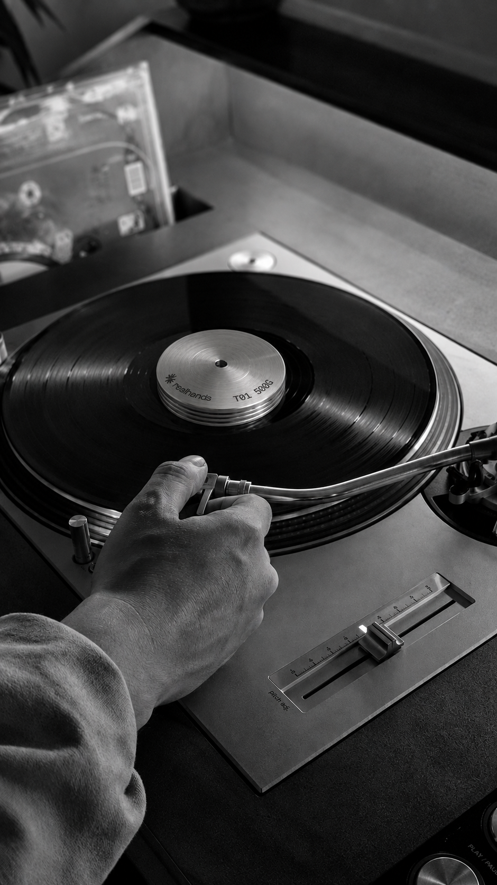
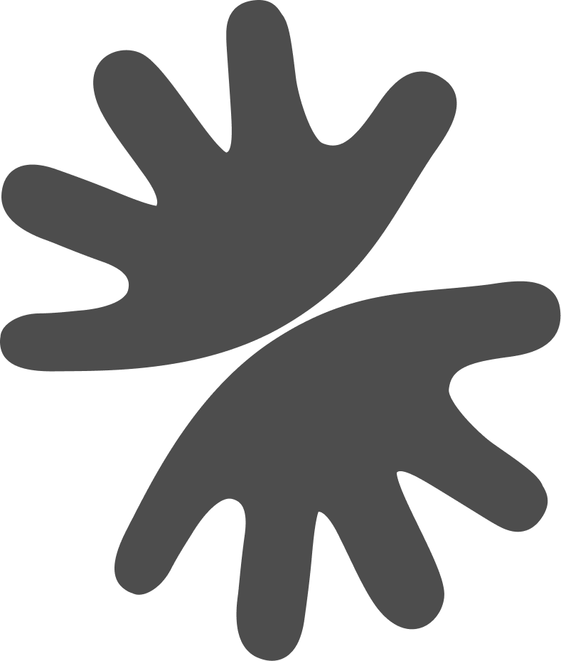
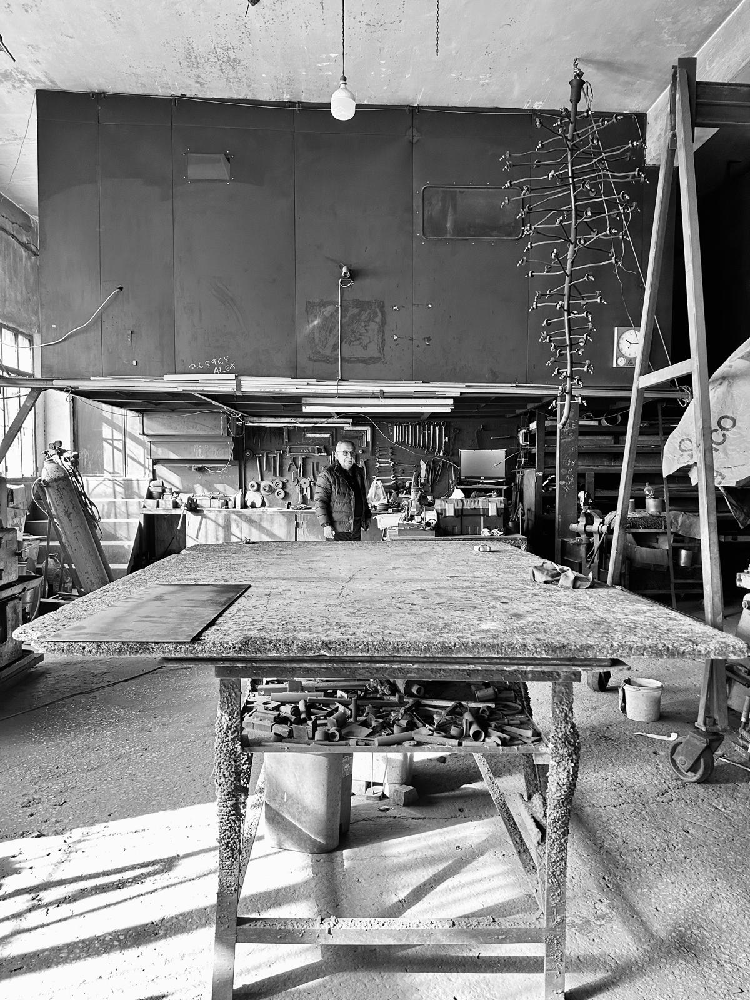

No molds, no shortcuts. Each piece is lathe-turned and finished by hand, so each one is uniquely yours.
Maximum mass in a compact form. Small enough for a record bag, present enough for the platter.
Added inertia tames resonance and micro-vibration, so the needle reads every groove true.
Stainless steel doesn't rust, wear, or age out. A weight you pass down, not replace.
500 to 800 grams press the record into full contact with the platter. No air gap, no drum skin. One quiet interface.
Vinyl rings when the stylus excites it and comes back as glare. Dense steel above the label settles it.
Most records carry a slight dish. Steady mass tames it, so the stylus tracks the groove's true path.


Born between Beirut and Paris, each realhands weight comes from a family workshop with thirty years in stainless steel and a passion for music.
Guaranteed for life. Buy one weight, once. If it ever fails, we repair it or replace it.
Read our story